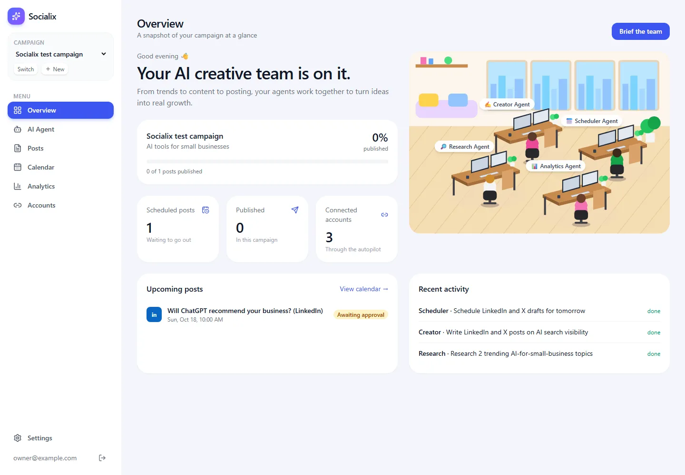

Social Media AI Agent Team
Build a dashboard where a team of five AI agents researches trending topics, writes posts for each social network and schedules them, while you approve each post before it goes out. This guide follows the video chapter by chapter. Next to each chapter it shows a complete, working implementation called Socialix: Claude instead of OpenAI, and your own WordPress Social Autopilot instead of Blotato for publishing. Every file is explained line by line, for people just starting as developers.
▶ Watch the full video
How this guide is organised
The agent team
Stack: the video and this guide
| Need | The video uses | Our app (Socialix) uses |
|---|---|---|
| App framework | Next.js through the create-fastnextjs-app boilerplate | Next.js 16 App Router, React 19, Tailwind CSS 4, written by hand |
| Login and database | InsForge (auth and hosted Postgres) with Drizzle | One-owner login with a signed cookie; local Postgres in Docker with Drizzle ORM |
| AI agents | OpenAI Agents SDK | Claude through the Anthropic SDK (tool use), Sonnet and Haiku models |
| Background work | Inngest job queue | An in-process background runner, with the page polling for updates |
| Agent computer | E2B desktop sandbox ("cloud desktop") | Claude's built-in web search tool |
| Images | ImageKit (AI generation and editing) | No image generation; posts can carry an image link |
| Publishing | Blotato API and MCP | Your WordPress Social Autopilot, through our own MCP server |
| Code quality | CodeRabbit AI reviews | Type check, production build and a 23-check browser test |
Start here if you are new
- ⚙How the Agent Team WorksOne request from start to finish, in pictures.concept
- 📖GlossaryEvery term used in this guide explained in plain language.reference
Steps
- 01IntroductionWhat the AI social media team does, what we build in this guide, and how it differs from the video.00:00:00
- 02Application DemoA tour of every page of the finished app: campaign, AI team, posts, calendar, analytics.00:01:38
- 03Tech StackThe video's stack (OpenAI, Blotato, InsForge, Inngest, E2B) next to ours (Claude, your autopilot, Postgres).00:07:11
- 04Project SetupCreate the Next.js 16 project, install the packages and read settings from two .env files.00:10:25
- 05CodeRabbit SetupAI code review with CodeRabbit in the video, and the checks we run instead: typecheck, build, browser test.00:21:24
- 06Auth & Database SetupSingle-owner sign-in with a signed cookie, and the Postgres tables with Drizzle ORM.00:25:17
- 07Create a New CampaignThe campaign brief form, the server action that saves it, and the current-campaign cookie.00:37:00
- 08Dashboard LayoutThe sidebar, campaign picker and page shell shared by every dashboard page.00:43:32
- 09Overview PageStats, progress, upcoming posts and recent team activity on one page.00:48:42
- 10Design the Office Space for AgentsAn SVG office where each agent sits at a desk that lights up while it works.00:51:18
- 11Agent PageThe AI Agent page: agent cards, chat, task board and the live office, kept fresh by polling.01:01:02
- 12Agent SDK ConfigClaude tool use with the Anthropic SDK: the team, their prompts and tools defined with zod.01:06:38
- 13Master AgentThe Master Agent plans a request and runs team members through the assign_task tool.01:14:46
- 14Background Job SchedulerRunning agents in the background so the page stays responsive (Inngest in the video, an in-process runner here).01:26:04
- 15Cloud Desktop Integration (Part 1)The video gives agents an E2B cloud desktop; our Research Agent uses Claude's web search instead.01:38:51
- 16Research and Creator ToolsThe video chapter is titled Cloud Desktop Part 2 but adds agent tools; ours: saving research, reading WordPress, and drafts that respect character limits.01:52:28
- 17ImageKit to Create PostsAI images with ImageKit in the video; in our app, image URLs for Instagram and TikTok posts.02:07:27
- 18Scheduling Posts (Blotato)Publishing through the WordPress Social Autopilot via our own MCP server, with owner approval.02:17:59
- 19Calendar PageA week view of scheduled posts with previous, next and today links.02:30:00
- 20Analytics PagePost counts by status and platform, and Claude token usage per agent.02:33:15
Handbook
Practical chapters that go beyond the video: how to install and run the app every day, how it was tested (and the real bugs that testing and use found), and how secrets, safety and costs are handled.
- 01Set Up and Run the AppFrom an empty machine to a running dashboard and publishing worker, with every command explained.chapter
- 02Testing and the Bugs We FixedThe browser test, what it checks, and the real bugs found while building (over-long drafts, a Chrome 155 crash).chapter
- 03Secrets, Safety and CostsWhere the keys live, why nothing posts without approval, and how to watch Claude spending.chapter
About the code
The video's source code is not public, and the presenter builds the app by prompting Claude Code. So the code in this guide is a separate implementation written for this guide: the Socialix app (snapshot of 16 October 2026). It type-checks, builds for production and passes a 23-check browser test. Its agents ran real Claude calls, and its publishing path was tested against a real WordPress Social Autopilot database without posting anything.
| Step | Difference from the video |
|---|---|
| 03, 12 | Claude (Anthropic SDK) instead of the OpenAI Agents SDK. |
| 06 | A single owner signs in with a password from .env; no user accounts or InsForge. |
| 14 | No Inngest: agents run in the background inside the Next.js server, and time-based publishing is the autopilot worker's job. |
| 15, 16 | No E2B cloud desktop: the Research Agent uses Claude's web search. |
| 17 | No ImageKit image generation; Instagram and TikTok posts need an image link you provide. |
| 18 | No Blotato: our MCP server queues approved posts in your WordPress Social Autopilot, whose worker publishes them. |
| 18 | Every post waits for your approval unless auto-publish is switched on in Settings. |
| 20 | No engagement metrics (likes, reach); the analytics page shows post statuses and Claude token usage. |